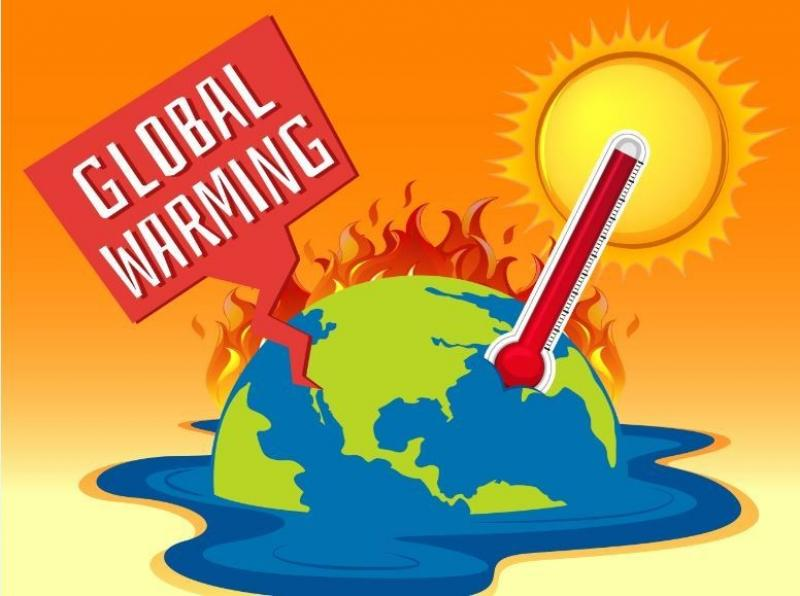

pemanasan global merupakan meningkatnya suhu permukaan bumi akibat peningkatan konsentrasi gas-gas rumah kaca.
Sumber energi bumi banyak berasal dari matahari. Di mana, sebagian besar energi berbentuk radiasi gelombang
pendek, seperti cahaya tampak.
Saat energi tersebut datang ke permukaan bumi, energi itu akan berubah dari cahaya menjadi panas yang
menghangatkan bumi.
Kemudian, permukaan bumi akan menyerap sebagian panas lalu memantulkan kembali sisanya.
Sebagian panas tersebut, ada yang berwujud radiasi infra merah gelombang panjang ke angkasa luar.
Tapi sebagian panas juga ada yang tetap terperangkap di atmosfer bumi, karena menumpuknya jumlah gas rumah kaca, seperti karbon dioksida, uap air, sulfur dioksida, dan gas metana yang menjadi perangkap gelombang radiasi tersebut.
Gas-gas tersebut nantinya menyerap dan memantulkan kembali radiasi gelombang yang dipancarkan bumi. Akibatnya, panas itu akan tersimpan di permukaan bumi yang membuat suhu rata-rata tahunan bumi terus meningkat.

dalam hal ini efek gas rumah kaca menjadi awal dampak global warming